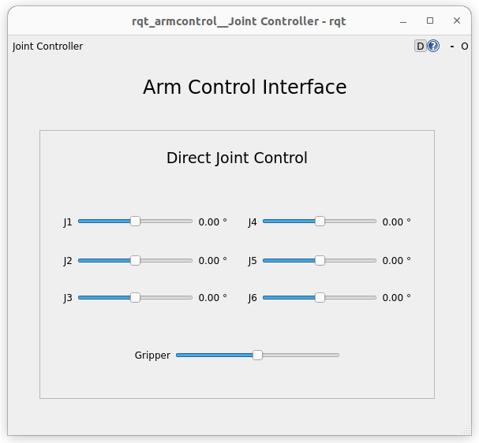
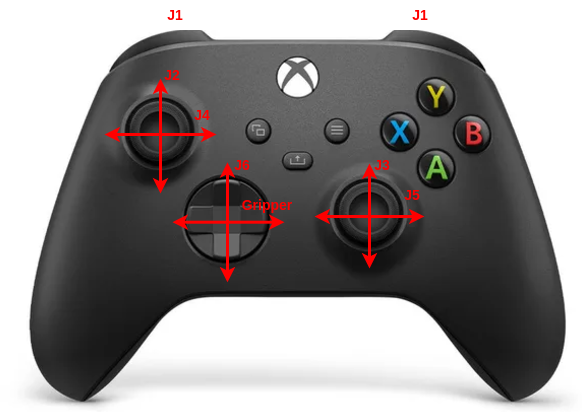
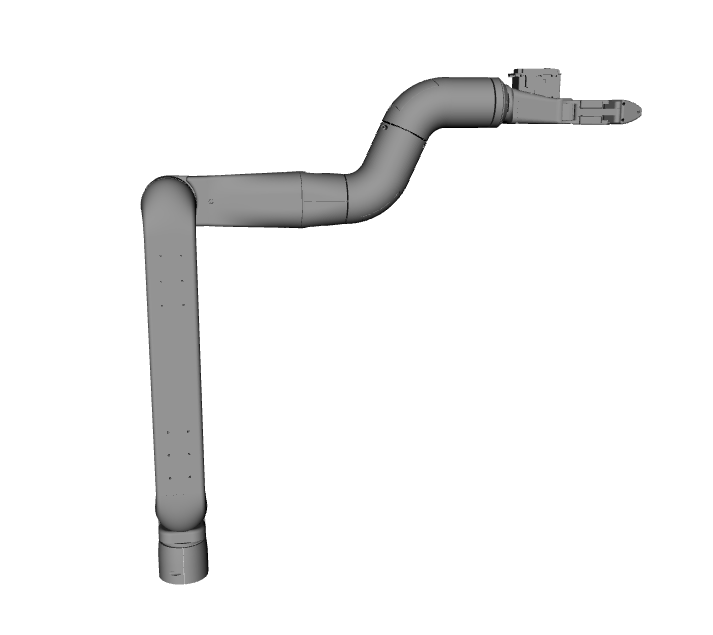

Explorer
View robot
To view the robot, open a terminal and launch the view_explorer.launch.py file from the ros2_control_explorer package:
ros2 launch ros2_control_explorer view_explorer.launch.py
With the joint_state_publisher_gui you can now change the position of each joint.
Simulation using Gazebo Fortress
Joint control
To launch the simulation in Gazebo with joint control, launch the joint_control.launch.py file from the ros2_control_explorer package:
ros2 launch ros2_control_explorer joint_control.launch.py
This script launches RViz, Gazebo, the robot controller, and all necessary files to send commands to the controller.
Tip
If you don’t want to launch RVIZ, add gui:=false when launching the simulation
To control the robot, you can use the GUI :
or an Xbox One controller :
Cartesian control
To launch the simulation in Gazebo with cartesian control, launch the cartesian_control.launch.py file from the ros2_control_explorer package:
ros2 launch ros2_control_explorer cartesian_control.launch.py
This script launches RViz, Gazebo, the robot controller, and all necessary files to send commands to the controller.
Tip
If you don’t want to launch RVIZ, add gui:=false when launching the simulation
Tip
If you don’t a 3D mouse, add spacenav:=false when launching the simulation
To control the robot, you can use the GUI :

or 3D mouse.
Simulation using VESC simulation
Joint control
To launch the VESC simulator, run the app_sim file from the pyvesc_explorer package:
ros2 run pyvesc_explorer app_sim
In another terminal, launch the explorer_joint.launch.py file from the ros2_control_explorer package to start the robot controller and RVIZ:
ros2 launch ros2_control_explorer explorer_joint.launch.py use_bridge:=true
Tip
If you don’t want to launch RVIZ, add gui:=false when launching explorer_joint
To control the robot, you can use the GUI :
or an Xbox One controller :
Cartesian control
To launch the VESC simulator, run the app_sim file from the pyvesc_explorer package:
ros2 run pyvesc_explorer app_sim
In another terminal, launch the explorer_cartesian.launch.py file from the ros2_control_explorer package to start the robot controller and RVIZ:
ros2 launch ros2_control_explorer explorer_cartesian.launch.py use_bridge:=true
Tip
If you don’t want to launch RVIZ, add gui:=false when launching explorer_cartesian
Tip
If you don’t have a 3D mouse, add spacenav:=false when launching explorer_cartesian
To control the robot, you can use the GUI :
or 3D mouse.
Use the real Explorer
First use of your Explorer
If this is the first time you are using your Explorer, update the vesc_joints_can_ids parameter with the VESC CAN IDs of your robot. (To find the VESC ID of your robot, see Change the CAN ID). This parameter is located in the explorer_vesc_hw.yaml configuration file of the ros2_control_explorer package.
Additionally, use the VESC Tool to initialize the 0 position of each actuator on the robot (see: Change the position 0 of an actuator). The robot’s position 0 should look like this:
Joint control
Connect the Explorer power supply and link it to a computer using a USB cable. In the explorer directory in the host, run :
sudo ./setcan0_500k_host.sh
This script configures the can0 interface with a bitrate of 500 kbps and sets the queue length to 100 packets.
In the container, launch the explorer_joint.launch.py file from the ros2_control_explorer package to start the robot controller and RVIZ.
ros2 launch ros2_control_explorer explorer_joint.launch.py use_bridge:=true
Tip
If you don’t want to launch RVIZ, add gui:=false when launching explorer_joint
To control the robot, you can use the GUI :
or an Xbox One controller :
Cartesian control
Attention
MEnsure that you have properly initialized the 0 position of your robot before proceeding. If not, refer back to the section First use of your Explorer
Connect the Explorer power supply and link it to a computer using a USB cable. In the explorer directory in the host run :
sudo ./setcan0_500k_host.sh
This script configures the can0 interface with a bitrate of 500 kbps and sets the queue length to 100 packets.
In the container, launch the explorer_cartesian.launch.py file from the ros2_control_explorer package to start the robot controller and RVIZ.
ros2 launch ros2_control_explorer explorer_cartesian.launch.py use_bridge:=true
Caution
Ensure that the robot’s physical position matches the one displayed in RViz before making any movements. If they do not align, reinitialize the 0 position of your robot First use of your Explorer
Tip
If you don’t want to launch RVIZ, add gui:=false when launching explorer_cartesian
Tip
If you don’t have a 3D mouse, add spacenav:=false when launching explorer_cartesian
To control the robot, you can use the GUI :
or 3D mouse.